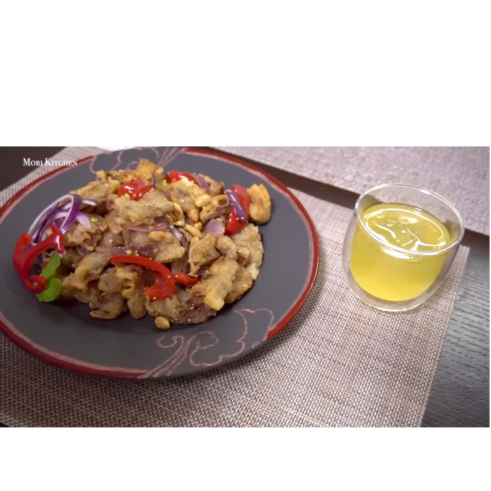

 Ингредиенты:
- Свиная лопатка — 300 г
- Болгарский перец — 2 шт
- Красный лук — 2 шт
- Зеленый лук — 3 шт
- Чеснок — 3 зубчика
- Мука — 50 г
- Кукурузный крахмал — 200 г
- 1 столовая ложка столового вина
- 1 столовая ложка соевого соуса
- Красный перец чили — 3 шт
- Семена кунжута
- Мята, орехи (по желанию)
- Соль, перец, сахар (по вкусу)
Способ приготовления:
- Нарезаем ломтиками свиную лопатку, после чего добавляем столовое вино, соевый соус, а также соль и перец. Тщательно перемешиваем и оставляем в холодильнике на полчаса.
- После нарезаем зеленый лук, красный перец и лук для самого блюда и небольшую часть мелко шинкуем для сервировки. Также небольшими слайсами нарезаем 3 зубчика чеснока.
- В отдельной миске смешиваем муку, кукурузный крахмал и воду для кляра, не забывая посолить и поперчить.
- После каждый ломтик свинины окунаем в кляр и жарим в кипящем масле. Вытаскиваем по готовности и золотистой корочке.
- Отдельно в сковородке поджариваем зеленый и красный лук, болгарский перец, чеснок и перец чили на среднем огне. Ближе к финалу добавляем туда и готовое мясо, чтобы все вкусы смешались.
- По желанию можешь добавить туда орехи на свой выбор и семена кунжута.
Готово.